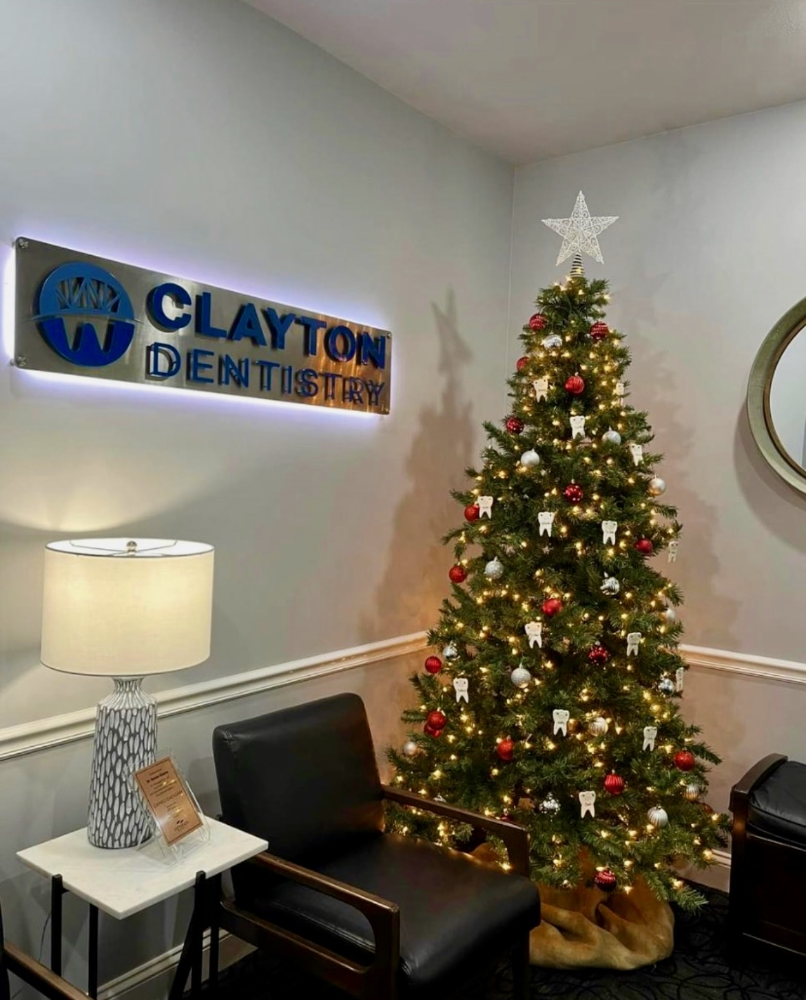

DESIGN • FABRICATION
Clayton Dentistry Sign
A custom sign designed and manufactured for a dental office waiting room.

THE PROJECT
From concept
to finished product.
This project involved designing and manufacturing a custom stainless steel sign for a dental office waiting room.
The project combined CAD design, machining, and fabrication to turn the original concept into a finished, professional piece.
DESIGN
Designing for the real world.


CAD DEVELOPMENT
Describe how the design was developed and how the geometry was prepared for manufacturing. Highlight any important dimensions, features, constraints, or design decisions.
MANUFACTURING
Turning the model into a part.
CAM & CNC
Explain how the CAD model was translated into manufacturing operations. Describe the CAM strategy, tooling, workholding, machining process, and any challenges encountered.


FINISHED PRODUCT
From CAD to reality.
The completed sign brings together the design, machining, and finishing processes into a finished product ready for installation.